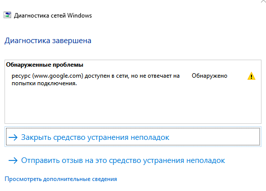

Сегодня ркн долбанули видимо вообще по всем адресам гугла, теперь и поисковик откис
{kind=link}

И что делать?
Это с gdpi? Если его выключить, то грузит?
это без gdpi, с включенным тоже не пашет
Странно…
Попробуйте в командной строке вот такие команды с выключенным gdpi, какой будет результат:
curl -sv -o NUL https://google.com
curl -sv -o NUL https://google.com --resolve google.com:443:108.177.14.101
curl -sv -o NUL https://google.com --connect-to ::mail.ru
curl -sv -o NUL https://mail.ru --connect-to ::108.177.14.101
Вы через файл с blacklist в названии запускаете? Если да - добавьте google.com и google.ru в файл russia-youtube.txt и перезапустите gdpi - заработает?
{kind=link}
{kind=link}
{kind=link}
{kind=link}
Реально на dpi блокировку похоже. На 2 скрине таймаут, а на 4 скрине соединение прошло, хотя айпи тот же.
Вообще вам надо эти скрины показать кому-то кто реально разбирается во всей этой теме 
А так, попробуйте google.com в блеклист добавить, как вам посоветовали выше.
Не знаю чем вам ещё помочь, сорри.
тоже РТ.
curl -4 -v -o NUL https://www.google.com
curl -4 -v --http3 -o NUL https://www.google.com
Host: www.google.com
User-Agent: curl/8.10.0
< HTTP/2 200
< date: Thu, 12 Sep 2024 21:29:45 GMT
< HTTP/3 200
< date: Thu, 12 Sep 2024 21:30:42 GMT
curl -kv -o NUL https://mail.ru --connect-to ::108.177.14.101
< HTTP/2 404